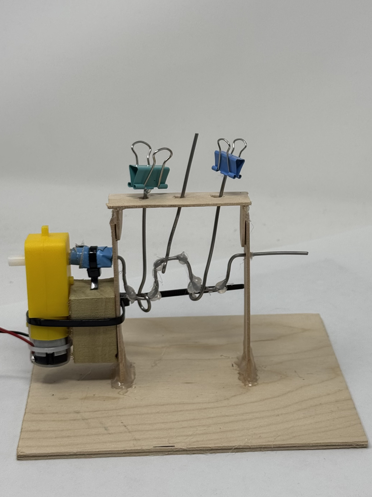
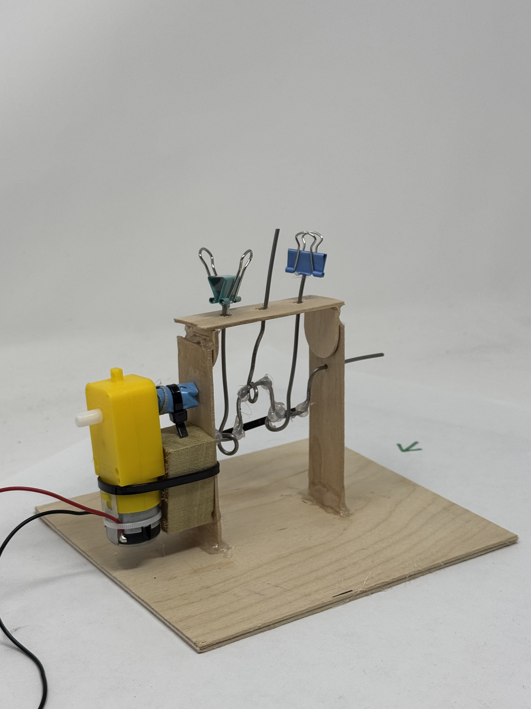
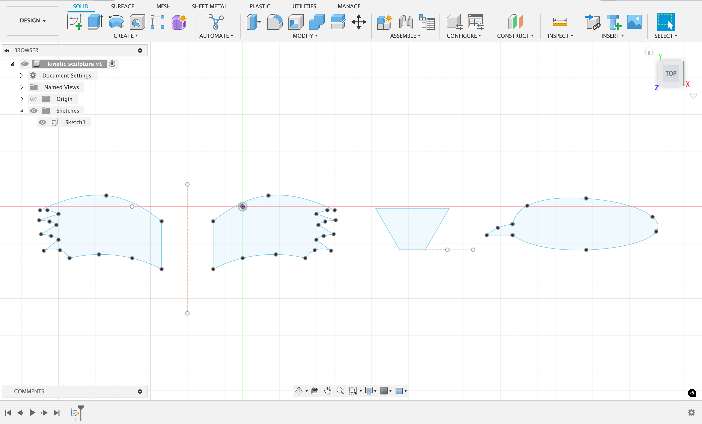
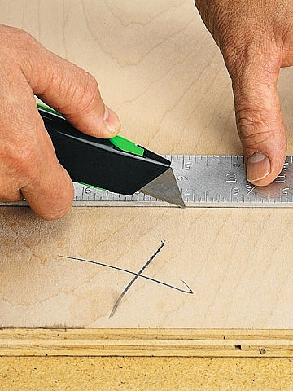
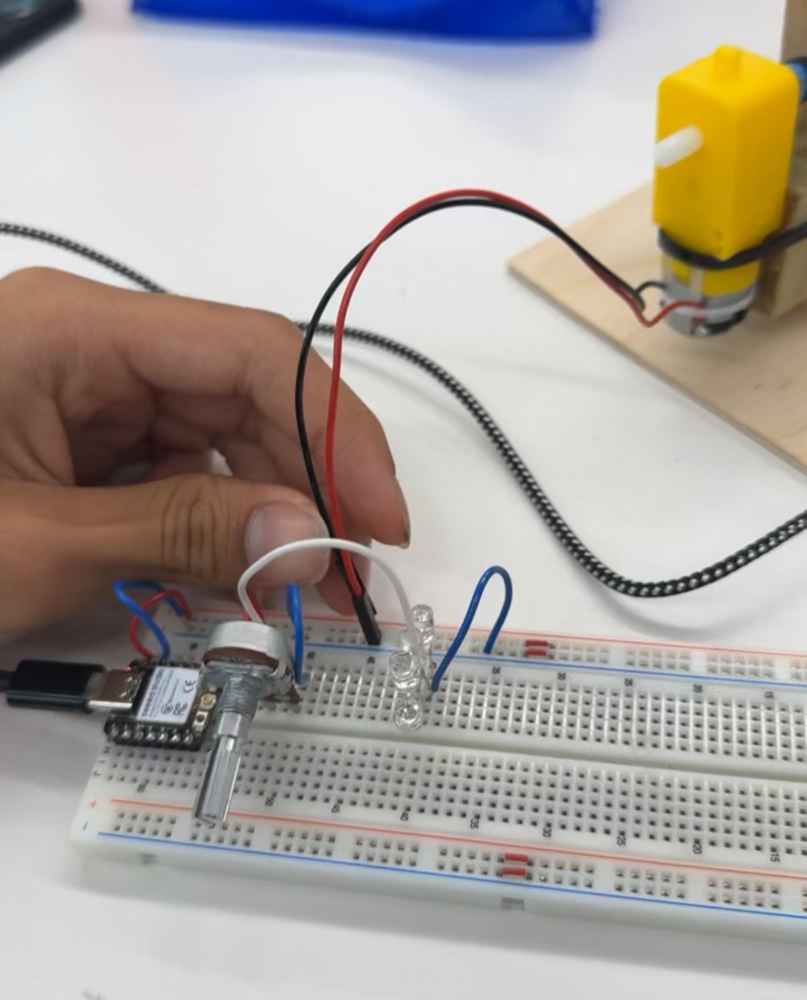
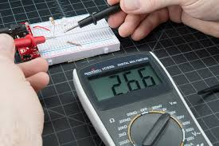

Week 03 · Fabrication
Hand Tools and Fabrication
A small kinetic sculpture, a motor, a wavy cam, and a row of colorful binder clips that go up and down in a wave.


Step 1: The bird CAD that didn't make it
My first plan was a small bird that flapped its wings, so I designed the bird parts in Fusion 360 and got them ready to laser cut. I didn't end up using the file because of some classmates' dishonesty regarding the line for the laser cutter, so by the time I would have gotten on the machine I would have lost most of the lab. I switched to the binder clip wave idea instead because it didn't need laser cut parts and I could build it with what was already on my bench.

Step 2: Building the platform
The mechanism is a horizontal shaft that the binder clips hang off of, so the platform needed to support that shaft at both ends and hold a small motor on one side that drives it. I cut a thin piece of wood for the base, then cut 2 taller pieces and glued them upright on either side of the base to act as bearings for the shaft. The shaft just rests in notches at the top of those uprights, low friction so the motor doesn't have to work hard to spin it.

Step 3: The wavy cam
To actually make the clips move up and down I bent a length of metal wire into a wavy shape, so the wire is offset above and below the rotation axis in a repeating pattern. The binder clips sit on top of the wire, and as the shaft spins, the wire pushes each clip up when a peak passes underneath it and lets it drop when a trough passes. Since the peaks are at different angles around the shaft, the clips don't all move together, they go up and down in a wave across the row.
The motor connects to one end of the shaft with a coupler, and I wired the motor through a potentiometer so I could control how fast the wave moves. The wiring is just ground, power, and the wiper of the potentiometer feeding the motor, with the other 2 pot pins on power and ground. Turning the knob varies the voltage going to the motor, which varies the speed.

Step 4: Measuring the circuit
Once it was running I put a multimeter on the supply to confirm the voltage was 5V like I expected, and from there I used Ohm's law (V = IR) and the rated resistance of the motor to back out a current of about 300 mA. That's well within what the bench supply can deliver, so nothing else needed to change.

What I learned
This was the first week I really had to use hand tools for the build (saw, drill, hot glue), not just digital fabrication, and what surprised me was how forgiving a project like this is to small mistakes. The shaft holes don't have to be perfect because the wire is bent anyway, and the binder clips are spaced approximately, so if one is a millimeter off the wave still looks fine. That's a different feel than the precise digital stuff in earlier weeks, and a good reminder that not every part needs to be tight tolerance.